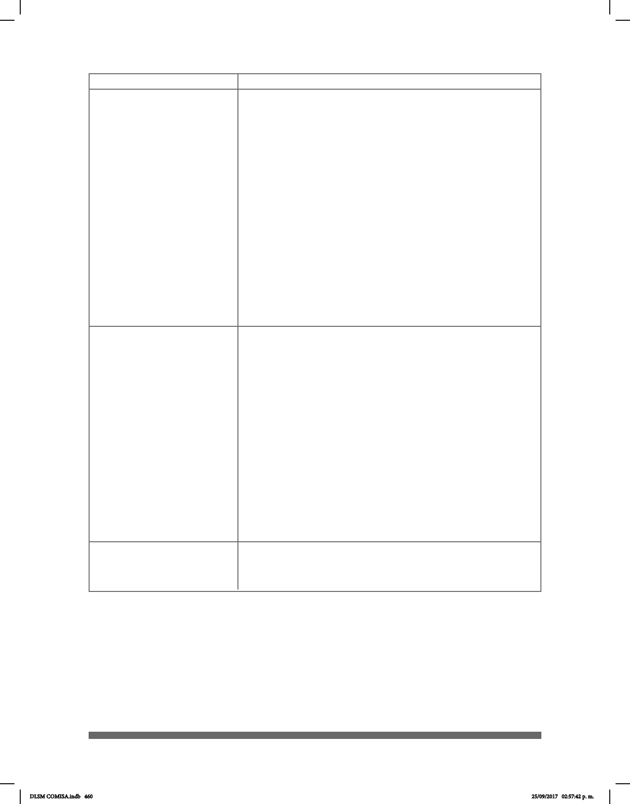

460
_________________o.i.g
¿GLOSA-GLOSA-GLOSA?
________________o.i.p
¿GLOSA-GLOSA-GLOSA?
Oraciones Interrogativas Generales (O.I.G.): son
aquellas que se usan para averiguar la verdad o
falsedad de un juicio. Se pueden distinguir, al menos,
dos tipos de oraciones interrogativas generales: aquellas
que requieren una respuesta “SÍ” o “NO”, y aquellas de
alternativa cerrada en la que la respuesta está en una de
las alternativas de la pregunta.
Un ¨SI¨ o un ¨NO¨: Si al contestar una pregunta
únicamente se requiere un simple SI o un NO; por
ejemplo, ¨¿TIENE HIJOS?¨ o ¨¿LE GUSTA EL CAFÉ?¨ se
deben seguir las siguientes reglas:
• Levante las cejas (abra los ojos)
• Incline la cabeza un poco hacia adelante
• Mantenga la seña hasta el nal de la oración
Oraciones Interrogativas Parciales (O.I.P.): son
aquellas en que se solicita información acerca del
sujeto o de sus cualidades. Este tipo de oraciones
se usa generalmente en pronombres y adverbios
interrogativos: “¿qué?”, “¿quién?”, “¿cuál?”,
“¿cuándo?”, “¿dónde?”, “¿cuánto?”, “¿cómo?”
• Para hacer una pregunta en la que intervenga
alguna de estas palabras siga los siguientes pasos:
• Frunza las cejas
• Incline hacia delante la cabeza
• Mantenga la seña hasta el nal de la oración (O.I.P.)
Símbolos
Ejemplo y descripción
CL
Se trata de un clasicador de la LSM (Véase la tabla de
Clasicadores…..)
DLSM COMISA.indb 460 25/09/2017 02:57:42 p. m.